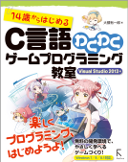
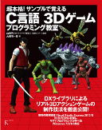

ＤＸライブラリ置き場
ＤＸライブラリとは、DirectXを使ったWindowsソフトの開発に必ず付いて回るDirectXやWindows関連のプログラムを使い易くまとめた形で利用できるようにしたＣ＋＋言語用のゲームライブラリです。(使用する際はＣ言語の知識だけで大丈夫です)
これによってプログラマーはゲームの本質的なプログラムに専念することが出来ます。かなり本格的なソフト制作からお遊び程度のミニゲーム制作まで幅広くカバーしています！
プログラムソースも公開していますので気兼ねなく使用してください。
|
 14歳からはじめる C言語わくわくゲームプログラミング教室 Visual Studio 2013編 著者は 大槻 有一郎様 ゲームプログラムの入門書です 初めてＣ言語に触れる方や、これからゲームプログラムを始める方、ＤＸライブラリの使い方が分からない方におすすめです。 内容はＣ言語の基礎解説の後、アクションパズルゲーム・横スクロールアクションゲーム・ダンジョンＲＰＧ型表示の迷路の作り方の解説となっています。 |
 超本格! サンプルで覚えるC言語 3Dゲームプログラミング教室 著者は 大槻 有一郎様 監修ＤＸライブラリ管理人 ３Ｄアクションゲームプログラムの解説書です。 ３Ｄアクションゲームに必要な移動・当たり判定・３Ｄモデルの扱い方・敵ＡＩ・エフェクト・サウンドなどの処理についてサンプルプログラム「３Ｄアクション基本」をパワーアップさせたサンプルゲームを基に解説しています。 書籍で扱っているサンプルゲームはこちらからダウンロードできます。 書籍は「プログラムの注釈だけでは理解できない！」という方におすすめです。( 但しステージエディタ・アニメーションエディタのプログラムの解説は書籍ではされていませんのでご注意ください ) |
ＤＸライブラリ更新履歴
ＤＸライブラリＨＰ更新履歴
ＤＸライブラリの仕様と特徴
どこまでできるＤＸライブラリ
ＤＸライブラリのダウンロード
ＤＸライブラリの使い方
ＤＸライブラリの関数リファレンスマニュアル
＆
サンプルプログラム
ＤＸライブラリミニテクニック
ＤＸライブラリサンプルプログラム
ＤＸライブラリゲームプログラム開発講座
ＤＸライブラリサンプルゲームのダウンロード
『皆様の作品紹介！』投稿＆閲覧ページ
ＤＸライブラリを使用していただいた「作品の紹介」を投稿したり
( 作品ファイル自体は投稿できない )
投稿していただいた作品(の、紹介)を閲覧したりというページです。
<一番新しい作品のスクリーンショット>

掲示板
雑談＆質問掲示板(日付順表示)
雑談風書き込みに適した掲示板です。
ＤＸライブラリプログラム＆プログラム質問掲示板(スレッド表示)
スレッド表示の質問・回答に適した掲示板です。
リンク
管理人のメールアドレス